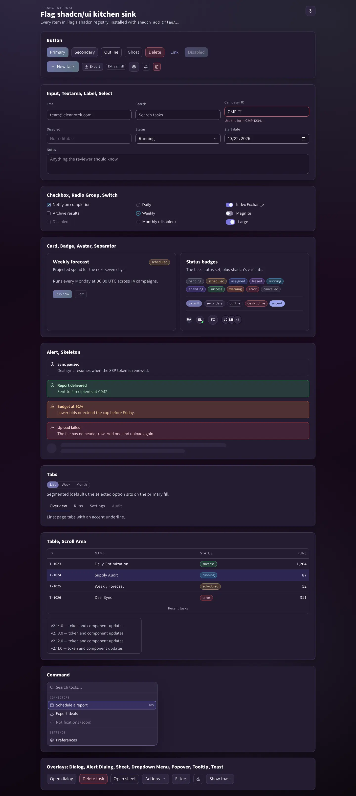
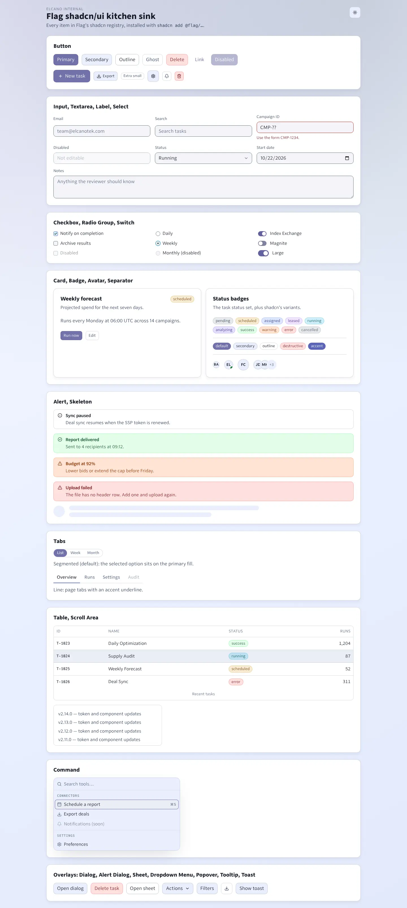
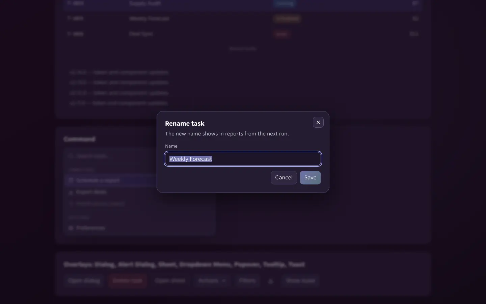
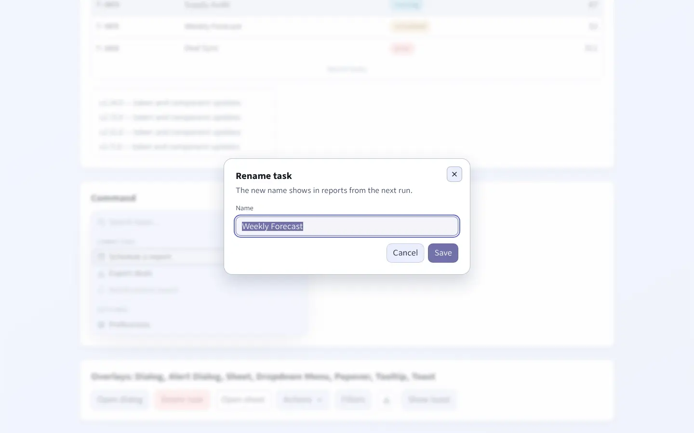
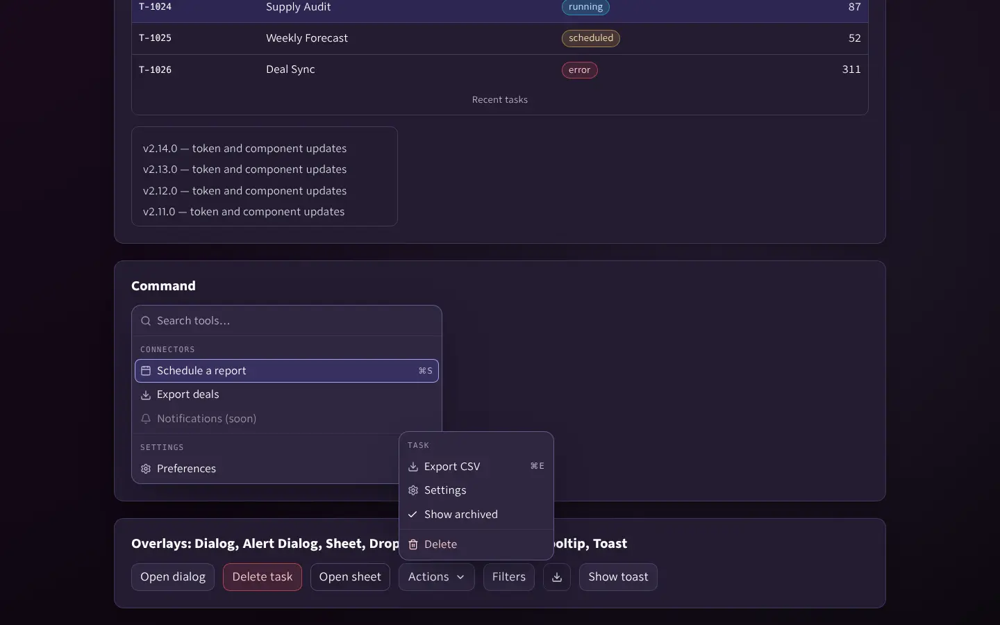
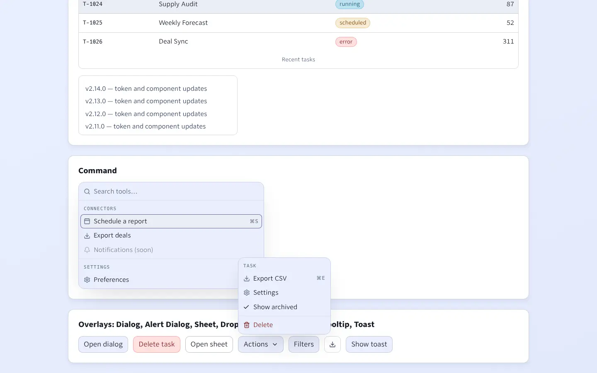
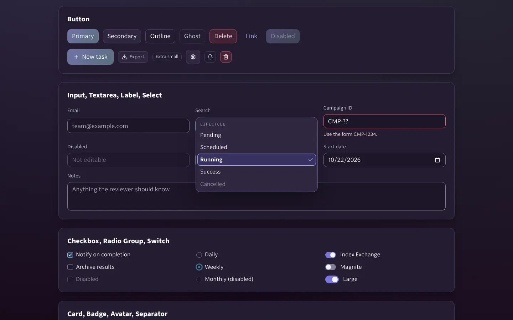
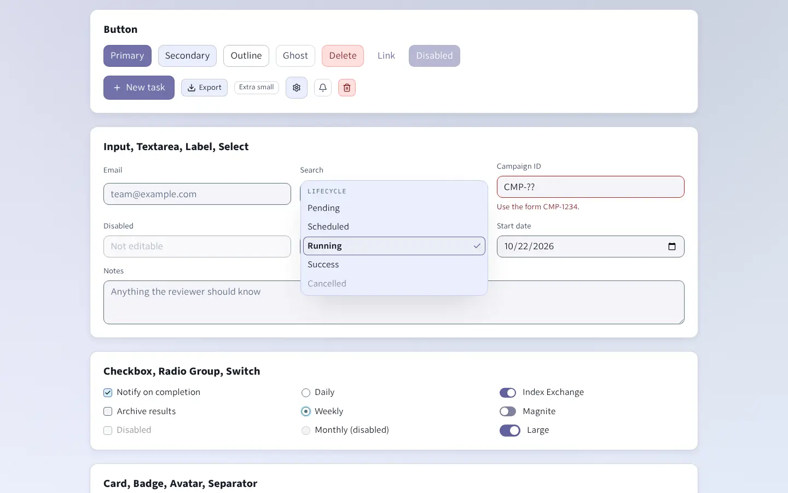

Flag's base components for Tier B apps (Vite + React + TypeScript, served by Go). Each item is upstream shadcn/ui restyled to Flag's component specs and themed by Flag tokens. Tier A pages use the matching Flag CSS classes; the mapping is in COMPONENTS.md.
Install
Registry: https://flag-71q.pages.dev/r/registry.json. Items resolve at https://flag-71q.pages.dev/r/{name}.json.
// components.json
"registries": { "@flag": "https://flag-71q.pages.dev/r/{name}.json" }
npx shadcn@4.21.4 add @flag/flag-theme @flag/button @flag/dialog
Vendor fonts/fonts.css, tokens/design-tokens.css and shadcn/theme.css with flag-sync and import them after Tailwind. Full steps, versioning and how to propose items: design-system/SHADCN.md in the Flag repo.
Kitchen sink
Every registry item installed into a scratch Vite app with shadcn add and rendered by design-system/shadcn/kitchen-sink/verify.sh (which also runs axe). The screenshot follows this page's theme.


Overlays






Tier A twins (shadcn-parity.css)
Server-rendered pages get the same components from components/components.css plus the opt-in components/shadcn-parity.css. These are those classes, live.
Items
@flag/flag-theme@flag/utils@flag/use-flag-theme@flag/button@flag/input@flag/textarea@flag/label@flag/select@flag/checkbox@flag/radio-group@flag/switch@flag/card@flag/badge@flag/alert@flag/separator@flag/tabs@flag/dialog@flag/alert-dialog@flag/sheet@flag/dropdown-menu@flag/popover@flag/tooltip@flag/table@flag/skeleton@flag/avatar@flag/scroll-area@flag/sonner@flag/command